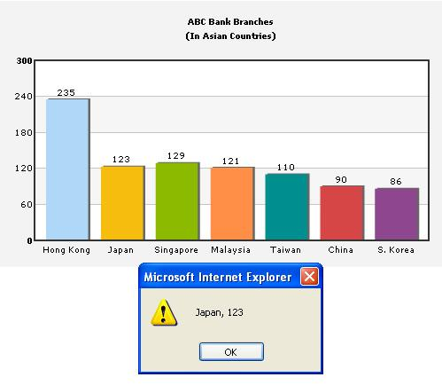

Using JavaScript functions as links |
Instead of using simple links, you can also set JavaScript links using FusionCharts i.e., you can invoke a JavaScript function present in the same page (in which the chart is present) when the end viewer clicks a data element on the chart. To attain this, all you need to do is place the name of JavaScript function instead of the link URL, as under: <set name='Japan' value='123' link="JavaScript:myJS('Japan, 123');" color='F6BD0F'/> In the above code, myJS refers to a custom JavaScript function present in the HTML page that embeds this chart. You can also specify any number of parameters for this function. When you now click the data item (column, pie, bar etc.) for this particular data, myJS function would be invoked and 'Japan, 123' would be passed to the function as the function parameter. Here, we've passed the data label and value just for demonstration purposes. In actual charts, you can pass identifier numbers or strings to each data. When the user clicks on the link, these identifiers can be sent back to your JavaScript functions for further actions (like loading detailed data for that identifier using AJAX or anything - the possibilities are endless). Let's quickly put up an example for this kind of links. We'll create a simple 2D Column chart indicating "ABC Bank Branches" in Asia. Each column when clicked, would pass its label and value to our custom JavaScript function myJS, which (for the sake of demonstration) would just write it out in an alert box. We create JSExample.html for this example in DrillDown folder. It contains the following HTML code: |
| <html> <head> <title>JavaScript Link Example</title> <script language="JavaScript" src="../FusionCharts/FusionCharts.js"></script> <SCRIPT LANGUAGE="JavaScript"> <!-- function myJS(myVar){ window.alert(myVar); } //--> </SCRIPT> </head> <body bgcolor="#ffffff"> |
Here, we've a defined a function myJS which will respond to the clicks generated from the chart. And now JSExample.xml looks as under: |
| <graph caption='ABC Bank Branches' subCaption='(In Asian Countries)' yaxislabel='Branches' xaxislabel='Country' decimalPrecision='0' bgcolor='F3f3f3' > <set name='Hong Kong' value='235' link="JavaScript:myJS('Hong Kong, 235');" color='AFD8F8'/> <set name='Japan' value='123' link="JavaScript:myJS('Japan, 123');" color='F6BD0F'/> <set name='Singapore' value='129' link="JavaScript:myJS('Singapore, 129');" color='8BBA00'/> <set name='Malaysia' value='121' link="JavaScript:myJS('Malaysia, 121');" color='FF8E46'/> <set name='Taiwan' value='110' link="JavaScript:myJS('Taiwan, 110');" color='008E8E'/> <set name='China' value='90' link="JavaScript:myJS('China, 90');" color='D64646' /> <set name='S. Korea' value='86' link="JavaScript:myJS('S. Korea, 86');" color='8E468E'/> </graph> |
| As you can see above, for each data item, we've
defined a JavaScript link, that points to the custom function myJS.
To this function, we're passing the name and value of the data item.
When you view the chart and click on a column, you'll see something like under: |
|  |